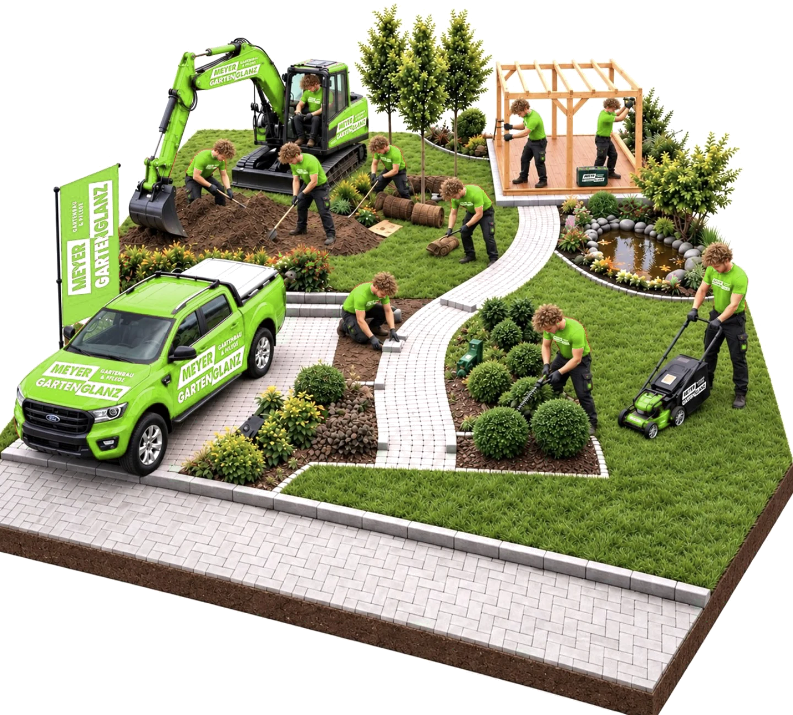

Planung, Bau & Pflege aus einer Hand
Mit Schweizer Präzision und einem tiefen Verständnis für die Natur gestalten, bauen und pflegen wir grüne Räume, die zum Verweilen einladen.

Gartenplanung
Jedes Projekt beginnt mit einer durchdachten Planung: Wir analysieren Ihren Standort, entwickeln ein passendes Gestaltungskonzept und stimmen Pflanzen- und Materialwahl auf Ihre Wünsche ab.
- task_altStandortanalyse
- task_altGestaltungskonzept
- task_altBepflanzungsplan
- task_altMaterial- & Pflanzenberatung
- task_altKostenschätzung
- task_altPersönliche Beratung vor Ort
In sechs Schritten zu Ihrem neuen Garten
Von der ersten Idee bis zur Umsetzung begleiten wir Sie Schritt für Schritt – transparent, verbindlich und immer mit Ihnen im Austausch.
Kontaktaufnahme & Wünsche
Sie schildern uns Ihre Ideen, Ihren Platz und was Ihnen im Garten wichtig ist.
Besichtigung vor Ort
Wir prüfen Boden, Lage und Gegebenheiten direkt bei Ihnen im Garten.
Erster Gestaltungsvorschlag
Sie erhalten ein Konzept mit Pflanzen-, Material- und Raumideen für Ihren Garten.
Feinschliff gemeinsam
Wünsche, Budget und letzte Details stimmen wir gemeinsam mit Ihnen ab.
Offerte & Terminplanung
Sie erhalten eine klare Kostenübersicht und einen verbindlichen Starttermin.
Umsetzung durch unser Team
Unser Team setzt das Konzept sorgfältig um – bis Ihr Garten fertig ist.